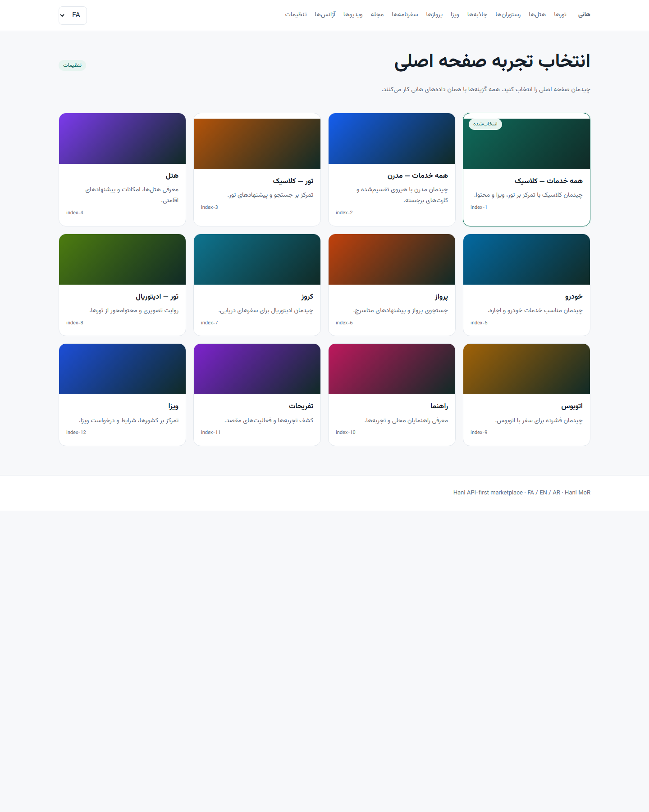
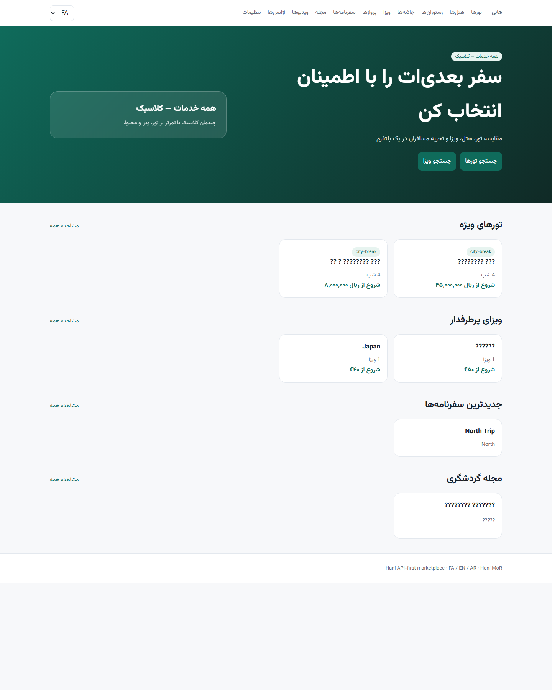
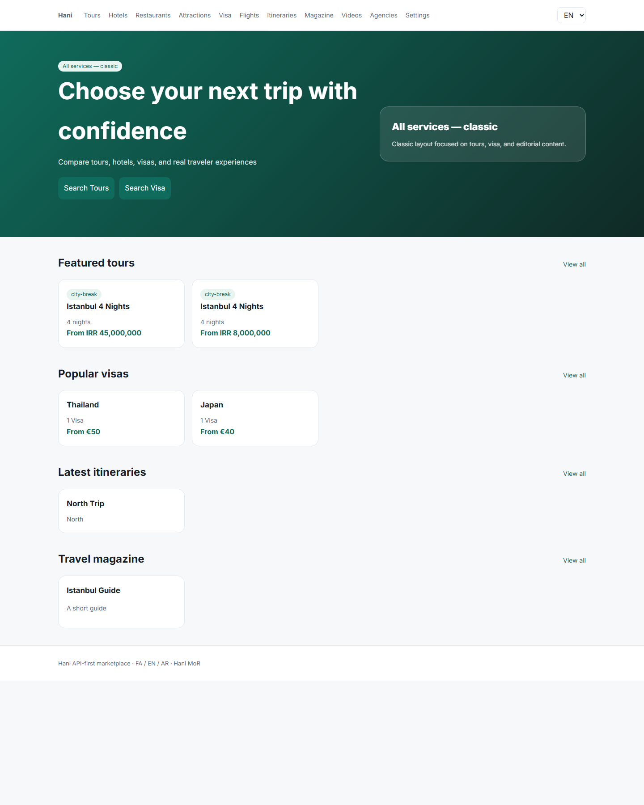
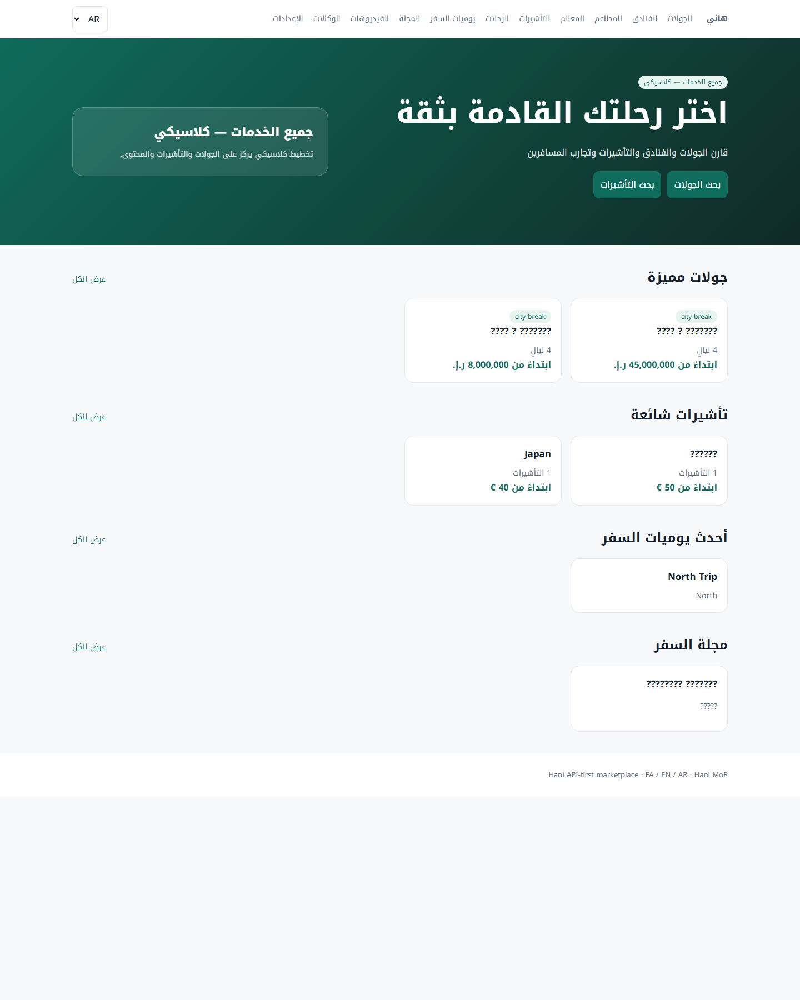

Gate 9.1 — پیشنمایش دیداری
این صفحه وضعیت فعلی فرانت را نشان میدهد: چندزبانه بودن، RTL/LTR، و انتخاب تجربه صفحه اصلی.
وضعیت:
- FA / EN / AR فعال است.
- FA و AR با
dir="rtl"و EN باdir="ltr"رندر میشوند. - انتخاب Home Experience از Settings انجام میشود و در Cookie ذخیره میشود.
- هر ۱۲ Home Experience در Registry حفظ شدهاند.
- تست زنده: انتخاب «هتل» از Settings و تغییر صفحه اصلی به تجربه هتل انجام شد.
۱. Settings — انتخاب Home Experience

۲. RTL — فارسی

۳. LTR — English

۴. RTL — العربية

فایلهای مرتبط
frontend/features/home/domain/home-experience.tsfrontend/features/home/application/resolve-home-experience.tsfrontend/features/home/infrastructure/home-experience-registry.tsfrontend/app/[locale]/settings/experience/page.tsxdocs/architecture/FRONTEND-I18N-RTL.md